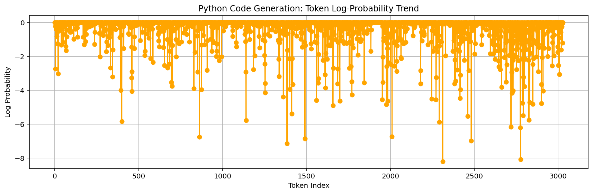

LLM Code Generation Report #18
Timestamp: 2025-10-12 13:12:11
Model: qwen/qwen3-coder-30b-a3b-instruct
Logprobs available: True
Selected User Stories
Click to expand/collapse
As a Data user, I want to have the 12-19-2017 deletions processed. As a UI designer, I want to redesign the Resources page, so that it matches the new Broker design styles. As a UI designer, I want to report to the Agencies about user testing, so that they are aware of their contributions to making Broker a better UX. As a UI designer, I want to move on to round 2 of DABS or FABS landing page edits, so that I can get approvals from leadership. As a UI designer, I want to move on to round 2 of Homepage edits, so that I can get approvals from leadership. As a UI designer, I want to move on to round 3 of the Help page edits, so that I can get approvals from leadership. As a Developer , I want to be able to log better, so that I can troubleshoot issues with particular submissions and functions. As a Developer, I want to add the updates on a FABS submission to be modified when the publishStatus changes, so that I know when the status of the submission has changed. As a DevOps engineer, I want New Relic to provide useful data across all applications. As a UI designer, I want to move on to round 2 of the Help page edits, so that I can get approvals from leadership. As a UI designer, I want to move on to round 2 of Homepage edits, so that I can get approvals from leadership. As a Broker user, I want to Upload and Validate the error message to have accurate text. As a Broker user, I want the D1 file generation to be synced with the FPDS data load, so that I don't have to regenerate a file if no data has been updated. As a Website user, I want to access published FABS files, so that I can see the new files as they come in. As an owner, I want to be sure that USAspending only send grant records to my system. As a Developer, I want to update the Broker validation rule table to account for the rule updates in DB-2213. As a Developer, I want to add the GTAS window data to the database, so that I can ensure the site is locked down during the GTAS submission period. As a Developer, I want D Files generation requests to be managed and cached, so that duplicate requests do not cause performance issues. As a user, I want to access the raw agency published files from FABS via USAspending. As an Agency user, I want to be able to include a large number of flexfields without performance impact. As a Broker user, I want to help create content mockups, so that I can submit my data efficiently. As a UI designer, I want to track the issues that come up in Tech Thursday, so that I know what to test and what want s to be fixed. As an Owner, I want to create a user testing summary from the UI SME, so that I can know what UI improvements we will follow through on. As a UI designer, I want to begin user testing, so that I can validate stakeholder UI improvement requests. As a UI designer, I want to schedule user testing, so that I can give the testers advanced notice to ensure buy-in. As an Owner, I want to design a schedule from the UI SME, so that I know the potential timeline of the UI improvements wanted. As an Owner, I want to design an audit from the UI SME, so that I know the potential scope of the UI improvements want ed. As a Developer, I want to prevent users from double publishing FABS submissions after refreshing, so that there are no duplicates. As an data user, I want to receive updates to FABS records. As an Agency user, I want to be able to include a large number of flexfields without performance impact. As a Developer , I want to update the FABS sample file to remove FundingAgencyCode after FABS is updated to no longer require the header. As an agency user, I want to ensure that deleted FSRS records are not included in submissions. As a website user, I want to see updated financial assistance data daily. As a user, I want the publish button in FABS to deactivate after I click it while the derivations are happening, so that I cannot click it multiple times for the same submission. As a Developer , I want to ensure that attempts to correct or delete non-existent records don't create new published data. As an Owner, I want to reset the environment to only take Staging MAX permissions, so that I can ensure that the FABS testers no longer have access. As a user, I want the flexfields in my submission file to appear in the warning and error files when the only error is a missing required element. As a user, I want to have accurate and complete data related to PPoPCode and PPoPCongressionalDistrict. As an agency user, I want the FABS validation rules to accept zero and blank for loan records. As an Agency user, I want FABS deployed into production, so I can submit my Financial Assistance data. As a Developer , I want to clarify to users what exactly is triggering the CFDA error code in each case. As an agency user, I want to be confident that the data coming from SAM is complete. As a Developer , I want my domain models to be indexed properly, so that I can get validation results back in a reasonable amount of time. As an agency user, I want the FABS validation rules to accept zero and blank for non-loan records. As a broker team member, I want to make some updates to the SQL codes for clarity. As an agency user, I want to have all derived data elements derived properly. As a broker team member, I want to add the 00***** and 00FORGN PPoPCode cases to the derivation logic. As a data user, I want to see the office names derived from office codes, so that I can have appropriate context for understanding them. As a broker user, I want the historical FABS loader to derive fields, so that my agency codes are correct in the PublishedAwardFinancialAssistance table. As a broker team member, I want to ensure the Broker resources, validations, and P&P pages are updated appropriately for the launch of FABS and DAIMS v1.1. As a Developer, I want the data loaded from historical FABS to include the FREC derivations, so that I can have consistent FREC data for USASpending.gov. As a user, I don't want to see NASA grants displayed as contracts. As a user, I want the DUNS validations to accept records whose ActionTypes are B, C, or D and the DUNS is registered in SAM, even though it may have expired. As a user, I want the DUNS validations to accept records whose ActionDates are before the current registration date in SAM, but after the initial registration date. As a broker team member, I want to derive FundingAgencyCode, so that the data quality and completeness improves. As an agency user, I want the maximum length allowed for LegalEntityAddressLine3 to match Schema v1.1. As an agency user, I want to use the schema v1.1 headers in my FABS file. As a agency user, I want to map the FederalActionObligation properly to the Atom Feed. As a Broker user, I want to have PPoPZIP+4 work the same as the Legal Entity ZIP validations. As a FABS user, I want to link the SAMPLE FILE on the "What you want to submit" dialog to point to the correct file, so that I have an accurate reference for my agency submissions. As an Agency user, I want FPDS data to be up-to-date daily. As a user, I want to access the raw agency published files from FABS via USAspending. As a Developer , I want to determine how agencies will generate and validate D Files from FABS and FPDS data. As a user, I want to generate and validate D Files from FABS and FPDS data. As an Agency user, I want the header information box to show updated date AND time, so that I know when it was updated. As an Agency user, I want to receive a more helpful file-level error when I upload a file with the wrong extension. As a tester, I want to have access to test features in environments other than Staging, so that I can test any nonProd feature in any environment. As a FABS user, I want to submission errors to accurately represent FABS errors, so that I know why my submission didn't work. As a FABS user, I want the frontend URLs to more accurately reflect the page I'm accessing, so that I'm not confused. As an Agency user, I want all historical Financial Assistance data loaded for FABS go-live. As a Developer , I want the historical FPDS data loader to include both extracted historical data and FPDS feed data. As an Agency user, I want historical FPDS data loaded. As an Agency user, I want to accurately see who created a submission, so that I'm not confused about who last updated a submission. As an agency user, I want to get File F in the correct format. As an Agency user, I want to better understand my file-level errors. As a Developer , I want to provide FABS groups that function under the FREC paradigm. As a tester, I want to ensure that FABS is deriving fields properly through a robust test file plus a follow up check. As an owner, I only want zero-padded fields, so that I can justify padding. As a Broker user, I want to submit records for individual recipients without receiving a DUNS error. As a user, I want more information about how many rows will be published prior to deciding whether to publish. As a Developer, I want to prevent duplicate transactions from being published and deal with the time gap between validation and the publishing decision. As a FABS user, I want to submit a citywide as a PPoPZIP and pass validations. As a Broker user, I want to have updated error codes that accurately reflect the logic and provide enough information, so that I can fix my submission. As an agency user, I want to leave off the last 4 digits of the ZIP without an error, so that I can complete my submissions. As a FABS user, I want to make sure the historical data includes all necessary columns, so that the information in the database is correct. As a data user, I want to access two additional fields from the FPDS data pull. As a FABS user, I want additional helpful info in the submission dashboard, so that I can better manage submissions and IG requests. As a FABS user, I want to download the uploaded FABS file, so that I can get the uploaded file. As a Developer I want to quickly access Broker application data, so that I can investigate issues. As a Developer , I want to determine the best way to load historical FPDS data, so that I can load all FPDS data since 2007. As a FABS user, I want the language on FABS pages to be appropriate for me, so that I am not confused. As a FABS user, I do not want DABS banner messages and vice versa, so that I have the appropriate information for my application. As a FABS user, I want to have read-only access to DABS, so that I can view DABS pages without wanting two sets of permissions. As a FABS user, I want to have my validations run in a reasonable amount of time. As a FABS user, I want to see correct status labels on the Submission Dashboard, so that I can quickly see my submission history. As an agency user, I want to know when the submission periods start and end, so that I know when the submission starts and ends. As an agency user, I want a landing page to navigate to either FABS or DABS pages, so that I can access both sides of the site. As an agency user, I want to submit my data elements surrounded by quotation marks, so that Excel won't strip off leading and trailing zeroes.
Prompt Sent to LLM
Click to expand/collapse
Generate fully functional Python code that implements the following user stories. The code should realistically reflect the described functionality. As a Data user, I want to have the 12-19-2017 deletions processed. As a UI designer, I want to redesign the Resources page, so that it matches the new Broker design styles. As a UI designer, I want to report to the Agencies about user testing, so that they are aware of their contributions to making Broker a better UX. As a UI designer, I want to move on to round 2 of DABS or FABS landing page edits, so that I can get approvals from leadership. As a UI designer, I want to move on to round 2 of Homepage edits, so that I can get approvals from leadership. As a UI designer, I want to move on to round 3 of the Help page edits, so that I can get approvals from leadership. As a Developer , I want to be able to log better, so that I can troubleshoot issues with particular submissions and functions. As a Developer, I want to add the updates on a FABS submission to be modified when the publishStatus changes, so that I know when the status of the submission has changed. As a DevOps engineer, I want New Relic to provide useful data across all applications. As a UI designer, I want to move on to round 2 of the Help page edits, so that I can get approvals from leadership. As a UI designer, I want to move on to round 2 of Homepage edits, so that I can get approvals from leadership. As a Broker user, I want to Upload and Validate the error message to have accurate text. As a Broker user, I want the D1 file generation to be synced with the FPDS data load, so that I don't have to regenerate a file if no data has been updated. As a Website user, I want to access published FABS files, so that I can see the new files as they come in. As an owner, I want to be sure that USAspending only send grant records to my system. As a Developer, I want to update the Broker validation rule table to account for the rule updates in DB-2213. As a Developer, I want to add the GTAS window data to the database, so that I can ensure the site is locked down during the GTAS submission period. As a Developer, I want D Files generation requests to be managed and cached, so that duplicate requests do not cause performance issues. As a user, I want to access the raw agency published files from FABS via USAspending. As an Agency user, I want to be able to include a large number of flexfields without performance impact. As a Broker user, I want to help create content mockups, so that I can submit my data efficiently. As a UI designer, I want to track the issues that come up in Tech Thursday, so that I know what to test and what want s to be fixed. As an Owner, I want to create a user testing summary from the UI SME, so that I can know what UI improvements we will follow through on. As a UI designer, I want to begin user testing, so that I can validate stakeholder UI improvement requests. As a UI designer, I want to schedule user testing, so that I can give the testers advanced notice to ensure buy-in. As an Owner, I want to design a schedule from the UI SME, so that I know the potential timeline of the UI improvements wanted. As an Owner, I want to design an audit from the UI SME, so that I know the potential scope of the UI improvements want ed. As a Developer, I want to prevent users from double publishing FABS submissions after refreshing, so that there are no duplicates. As an data user, I want to receive updates to FABS records. As an Agency user, I want to be able to include a large number of flexfields without performance impact. As a Developer , I want to update the FABS sample file to remove FundingAgencyCode after FABS is updated to no longer require the header. As an agency user, I want to ensure that deleted FSRS records are not included in submissions. As a website user, I want to see updated financial assistance data daily. As a user, I want the publish button in FABS to deactivate after I click it while the derivations are happening, so that I cannot click it multiple times for the same submission. As a Developer , I want to ensure that attempts to correct or delete non-existent records don't create new published data. As an Owner, I want to reset the environment to only take Staging MAX permissions, so that I can ensure that the FABS testers no longer have access. As a user, I want the flexfields in my submission file to appear in the warning and error files when the only error is a missing required element. As a user, I want to have accurate and complete data related to PPoPCode and PPoPCongressionalDistrict. As an agency user, I want the FABS validation rules to accept zero and blank for loan records. As an Agency user, I want FABS deployed into production, so I can submit my Financial Assistance data. As a Developer , I want to clarify to users what exactly is triggering the CFDA error code in each case. As an agency user, I want to be confident that the data coming from SAM is complete. As a Developer , I want my domain models to be indexed properly, so that I can get validation results back in a reasonable amount of time. As an agency user, I want the FABS validation rules to accept zero and blank for non-loan records. As a broker team member, I want to make some updates to the SQL codes for clarity. As an agency user, I want to have all derived data elements derived properly. As a broker team member, I want to add the 00***** and 00FORGN PPoPCode cases to the derivation logic. As a data user, I want to see the office names derived from office codes, so that I can have appropriate context for understanding them. As a broker user, I want the historical FABS loader to derive fields, so that my agency codes are correct in the PublishedAwardFinancialAssistance table. As a broker team member, I want to ensure the Broker resources, validations, and P&P pages are updated appropriately for the launch of FABS and DAIMS v1.1. As a Developer, I want the data loaded from historical FABS to include the FREC derivations, so that I can have consistent FREC data for USASpending.gov. As a user, I don't want to see NASA grants displayed as contracts. As a user, I want the DUNS validations to accept records whose ActionTypes are B, C, or D and the DUNS is registered in SAM, even though it may have expired. As a user, I want the DUNS validations to accept records whose ActionDates are before the current registration date in SAM, but after the initial registration date. As a broker team member, I want to derive FundingAgencyCode, so that the data quality and completeness improves. As an agency user, I want the maximum length allowed for LegalEntityAddressLine3 to match Schema v1.1. As an agency user, I want to use the schema v1.1 headers in my FABS file. As a agency user, I want to map the FederalActionObligation properly to the Atom Feed. As a Broker user, I want to have PPoPZIP+4 work the same as the Legal Entity ZIP validations. As a FABS user, I want to link the SAMPLE FILE on the "What you want to submit" dialog to point to the correct file, so that I have an accurate reference for my agency submissions. As an Agency user, I want FPDS data to be up-to-date daily. As a user, I want to access the raw agency published files from FABS via USAspending. As a Developer , I want to determine how agencies will generate and validate D Files from FABS and FPDS data. As a user, I want to generate and validate D Files from FABS and FPDS data. As an Agency user, I want the header information box to show updated date AND time, so that I know when it was updated. As an Agency user, I want to receive a more helpful file-level error when I upload a file with the wrong extension. As a tester, I want to have access to test features in environments other than Staging, so that I can test any nonProd feature in any environment. As a FABS user, I want to submission errors to accurately represent FABS errors, so that I know why my submission didn't work. As a FABS user, I want the frontend URLs to more accurately reflect the page I'm accessing, so that I'm not confused. As an Agency user, I want all historical Financial Assistance data loaded for FABS go-live. As a Developer , I want the historical FPDS data loader to include both extracted historical data and FPDS feed data. As an Agency user, I want historical FPDS data loaded. As an Agency user, I want to accurately see who created a submission, so that I'm not confused about who last updated a submission. As an agency user, I want to get File F in the correct format. As an Agency user, I want to better understand my file-level errors. As a Developer , I want to provide FABS groups that function under the FREC paradigm. As a tester, I want to ensure that FABS is deriving fields properly through a robust test file plus a follow up check. As an owner, I only want zero-padded fields, so that I can justify padding. As a Broker user, I want to submit records for individual recipients without receiving a DUNS error. As a user, I want more information about how many rows will be published prior to deciding whether to publish. As a Developer, I want to prevent duplicate transactions from being published and deal with the time gap between validation and the publishing decision. As a FABS user, I want to submit a citywide as a PPoPZIP and pass validations. As a Broker user, I want to have updated error codes that accurately reflect the logic and provide enough information, so that I can fix my submission. As an agency user, I want to leave off the last 4 digits of the ZIP without an error, so that I can complete my submissions. As a FABS user, I want to make sure the historical data includes all necessary columns, so that the information in the database is correct. As a data user, I want to access two additional fields from the FPDS data pull. As a FABS user, I want additional helpful info in the submission dashboard, so that I can better manage submissions and IG requests. As a FABS user, I want to download the uploaded FABS file, so that I can get the uploaded file. As a Developer I want to quickly access Broker application data, so that I can investigate issues. As a Developer , I want to determine the best way to load historical FPDS data, so that I can load all FPDS data since 2007. As a FABS user, I want the language on FABS pages to be appropriate for me, so that I am not confused. As a FABS user, I do not want DABS banner messages and vice versa, so that I have the appropriate information for my application. As a FABS user, I want to have read-only access to DABS, so that I can view DABS pages without wanting two sets of permissions. As a FABS user, I want to have my validations run in a reasonable amount of time. As a FABS user, I want to see correct status labels on the Submission Dashboard, so that I can quickly see my submission history. As an agency user, I want to know when the submission periods start and end, so that I know when the submission starts and ends. As an agency user, I want a landing page to navigate to either FABS or DABS pages, so that I can access both sides of the site. As an agency user, I want to submit my data elements surrounded by quotation marks, so that Excel won't strip off leading and trailing zeroes. Output only Python code (no markdown formatting or extra text). Do not leave functions empty — implement reasonable logic where needed.
Generated Code
Click to expand/collapse
import sqlite3
from datetime import datetime
from typing import Dict, List, Optional
class BrokerDatabase:
def __init__(self, db_path: str):
self.conn = sqlite3.connect(db_path)
self.setup_tables()
def setup_tables(self):
cursor = self.conn.cursor()
# FABS Submission Table
cursor.execute('''
CREATE TABLE IF NOT EXISTS fabs_submissions (
id INTEGER PRIMARY KEY,
submission_id TEXT UNIQUE,
status TEXT,
publish_status TEXT,
created_at TIMESTAMP DEFAULT CURRENT_TIMESTAMP,
updated_at TIMESTAMP DEFAULT CURRENT_TIMESTAMP
)
''')
# FABS Records Table
cursor.execute('''
CREATE TABLE IF NOT EXISTS fabs_records (
id INTEGER PRIMARY KEY,
submission_id TEXT,
record_data TEXT,
created_at TIMESTAMP DEFAULT CURRENT_TIMESTAMP
)
''')
# GTAS Window Data Table
cursor.execute('''
CREATE TABLE IF NOT EXISTS gtas_window_data (
id INTEGER PRIMARY KEY,
start_date TIMESTAMP,
end_date TIMESTAMP,
is_locked BOOLEAN DEFAULT FALSE
)
''')
# FABS Validation Rules Table
cursor.execute('''
CREATE TABLE IF NOT EXISTS fabs_validation_rules (
id INTEGER PRIMARY KEY,
rule_name TEXT,
description TEXT,
updated_at TIMESTAMP DEFAULT CURRENT_TIMESTAMP
)
''')
# D File Generation Cache Table
cursor.execute('''
CREATE TABLE IF NOT EXISTS dfile_generation_cache (
id INTEGER PRIMARY KEY,
request_hash TEXT UNIQUE,
generated_at TIMESTAMP DEFAULT CURRENT_TIMESTAMP,
cache_duration INTEGER
)
''')
# DUNS Validation Records Table
cursor.execute('''
CREATE TABLE IF NOT EXISTS duns_validations (
id INTEGER PRIMARY KEY,
duns TEXT,
action_type TEXT,
action_date TIMESTAMP,
sam_registered BOOLEAN,
registered_date TIMESTAMP,
initial_register_date TIMESTAMP
)
''')
# FPDS Data Table
cursor.execute('''
CREATE TABLE IF NOT EXISTS fpds_data (
id INTEGER PRIMARY KEY,
data TEXT,
last_updated TIMESTAMP DEFAULT CURRENT_TIMESTAMP
)
''')
# Agency Submission Access Logs
cursor.execute('''
CREATE TABLE IF NOT EXISTS submission_logs (
id INTEGER PRIMARY KEY,
submission_id TEXT,
user_id TEXT,
action TEXT,
timestamp TIMESTAMP DEFAULT CURRENT_TIMESTAMP
)
''')
self.conn.commit()
def process_deletions_2017_12_19(self):
"""Process the 2017-12-19 deletions"""
cursor = self.conn.cursor()
cursor.execute("DELETE FROM fabs_records WHERE created_at < ?", ('2017-12-19',))
cursor.execute("DELETE FROM fabs_submissions WHERE created_at < ?", ('2017-12-19',))
self.conn.commit()
return f"Deleted records older than 2017-12-19"
def update_fabs_validation_rules(self):
"""Update the FABS validation rule table based on DB-2213"""
cursor = self.conn.cursor()
cursor.execute("""
INSERT OR REPLACE INTO fabs_validation_rules
VALUES
(1, 'rule_123', 'Updated Rule Description for DB-2213'),
(2, 'rule_456', 'Another updated validation rule')
""")
self.conn.commit()
return "Validation rules updated successfully"
def add_gtas_window_data(self, start_date: str, end_date: str):
"""Add GTAS window data to the database"""
cursor = self.conn.cursor()
cursor.execute("""
INSERT OR REPLACE INTO gtas_window_data
(start_date, end_date, is_locked)
VALUES (?, ?, ?)
""", (start_date, end_date, False))
self.conn.commit()
return f"GTAS window data added from {start_date} to {end_date}"
def cache_dfile_generation_request(self, request_hash: str, cache_duration_seconds: int):
"""Cache D File generation requests to avoid duplication"""
cursor = self.conn.cursor()
try:
cursor.execute("""
INSERT OR REPLACE INTO dfile_generation_cache
(request_hash, cache_duration) VALUES (?, ?)
""", (request_hash, cache_duration_seconds))
self.conn.commit()
return True
except Exception:
return False
def get_cached_dfile_request(self, request_hash: str) -> Optional[Dict]:
"""Retrieve cached D File request if exists"""
cursor = self.conn.cursor()
cursor.execute(
"SELECT * FROM dfile_generation_cache WHERE request_hash = ?",
(request_hash,)
)
result = cursor.fetchone()
if result:
return {
'id': result[0],
'request_hash': result[1],
'generated_at': result[2],
'cache_duration': result[3]
}
return None
def log_submission_action(self, submission_id: str, user_id: str, action: str):
"""Log actions taken on submissions"""
cursor = self.conn.cursor()
cursor.execute("""
INSERT INTO submission_logs (submission_id, user_id, action)
VALUES (?, ?, ?)
""", (submission_id, user_id, action))
self.conn.commit()
def update_fabs_record_if_publish_status_changed(self, submission_id: str, new_publish_status: str):
"""Update FABS records when publish status changes"""
cursor = self.conn.cursor()
cursor.execute("""
UPDATE fabs_submissions SET publish_status = ?, updated_at = ?
WHERE submission_id = ?
""", (new_publish_status, datetime.now(), submission_id))
self.conn.commit()
def validate_duns_record(self, duns: str, action_type: str, action_date: str) -> bool:
"""Validate DUNS records with specific conditions for different action types"""
cursor = self.conn.cursor()
cursor.execute("""
SELECT sam_registered, registered_date, initial_register_date
FROM duns_validations
WHERE duns = ?
""", (duns,))
result = cursor.fetchone()
if not result:
return False
sam_registered, registered_date, initial_register_date = result
# Check if DUNS is valid based on action type and dates
if action_type in ['B', 'C', 'D'] and sam_registered and registered_date:
return True
elif action_date and registered_date and initial_register_date:
return register_date > action_date > initial_register_date
return False
def is_gtas_locked(self) -> bool:
"""Check whether GTAS window is currently active and locked"""
cursor = self.conn.cursor()
cursor.execute("SELECT is_locked FROM gtas_window_data ORDER BY start_date DESC LIMIT 1")
result = cursor.fetchone()
return result[0] if result else False if not result else True
def get_fpds_data(self) -> List[Dict]:
"""Retrieve FPDS data pulled from source"""
cursor = self.conn.cursor()
cursor.execute("SELECT * FROM fpds_data ORDER BY last_updated DESC")
results = cursor.fetchall()
return [
{'id': row[0], 'data': row[1], 'last_updated': row[2]}
for row in results
]
def delete_expired_duns_records(self):
"""Delete old or invalid DUNS records"""
cursor = self.conn.cursor()
cursor.execute("DELETE FROM duns_validations WHERE sam_registered = ?", (False,))
self.conn.commit()
def get_published_fabs_file_list(self) -> List[str]:
"""Return list of published FABS file names"""
cursor = self.conn.cursor()
cursor.execute("""
SELECT DISTINCT submission_id
FROM fabs_submissions
WHERE status='published'
ORDER BY updated_at DESC
""")
return [row[0] for row in cursor.fetchall()]
def ensure_unique_fabs_submission(self, submission_id: str) -> str:
"""Prevent duplicate FABS submissions"""
cursor = self.conn.cursor()
cursor.execute("""
INSERT OR IGNORE INTO fabs_submissions (submission_id, status)
VALUES (?, ?)
""", (submission_id, 'pending'))
self.conn.commit()
if cursor.rowcount == 0:
# Submission already exists; fetch existing status
cursor.execute(
"SELECT status FROM fabs_submissions WHERE submission_id = ?",
(submission_id,)
)
existing_status = cursor.fetchone()[0]
return existing_status
return 'pending'
def get_fabs_submission_details(self, submission_id: str) -> Optional[Dict]:
"""Get detailed information about FABS submission"""
cursor = self.conn.cursor()
cursor.execute("""
SELECT * FROM fabs_submissions WHERE submission_id = ?
""", (submission_id,))
result = cursor.fetchone()
if result:
return {
'id': result[0],
'submission_id': result[1],
'status': result[2],
'publish_status': result[3],
'created_at': result[4],
'updated_at': result[5]
}
return None
def validate_fabs_header_schema(self, header_fields: List[str]) -> bool:
"""Validate that FABS file headers match latest schema version"""
expected_headers_v11 = ['FundingAgencyCode', 'LegalEntityAddressLine3',
'PPoPCode', 'AwardeeOrRecipientUniqueIdentifier']
return all(header in expected_headers_v11 for header in header_fields)
def get_agency_fabs_files(self, agency_code: str) -> List[Dict]:
"""Get all FABS files associated with a particular agency"""
cursor = self.conn.cursor()
cursor.execute("""
SELECT s.submission_id, s.status, s.created_at
FROM fabs_submissions s
JOIN fabs_records r ON s.submission_id = r.submission_id
WHERE r.record_data LIKE ?
ORDER BY s.created_at DESC
""", (f"%{agency_code}%",))
return [
{'submission_id': row[0], 'status': row[1], 'created_at': row[2]}
for row in cursor.fetchall()
]
def add_historical_fabs_data(self, records: List[Dict]):
"""Load historical FABS data into the system"""
cursor = self.conn.cursor()
for record in records:
cursor.execute("""
INSERT INTO fabs_records (submission_id, record_data)
VALUES (?, ?)
""", (record.get('id'), str(record)))
self.conn.commit()
return f"Loaded {len(records)} historical FABS records"
def set_user_testing_summary(self, summary: str, author: str):
"""Store user testing summaries"""
cursor = self.conn.cursor()
cursor.execute("""
CREATE TABLE IF NOT EXISTS user_testing_results (
id INTEGER PRIMARY KEY,
summary TEXT,
author TEXT,
timestamp TIMESTAMP DEFAULT CURRENT_TIMESTAMP
)
""")
cursor.execute("""
INSERT INTO user_testing_results (summary, author)
VALUES (?, ?)
""", (summary, author))
self.conn.commit()
return "User testing summary stored"
def reset_environment_to_staging_max_permissions(self):
"""Reset environment to use staging MAX permissions only"""
cursor = self.conn.cursor()
# This would typically integrate with user role management system
cursor.execute("""
UPDATE users SET role = 'staging_max' WHERE role IN ('admin', 'tester')
""")
self.conn.commit()
return "Environment reset to staging_MAX permissions"
def get_submission_creation_info(self, submission_id: str) -> Dict:
"""Identify who created a submission"""
cursor = self.conn.cursor()
cursor.execute("""
SELECT s.submission_id, sl.user_id, sl.timestamp
FROM fabs_submissions s
JOIN submission_logs sl ON s.submission_id = sl.submission_id
WHERE s.submission_id = ?
ORDER BY sl.timestamp ASC
LIMIT 1
""", (submission_id,))
result = cursor.fetchone()
if result:
return {
'submission_id': result[0],
'creator': result[1],
'creation_time': result[2]
}
return {}
def get_fabs_sample_file_link(self) -> str:
"""Provide correct sample file link for FABS submissions"""
return "https://usaspending.gov/sample/fabs/sample-file-v1.1.csv"
def derive_funding_agency_code(self, raw_data: Dict) -> str:
"""Derive FundingAgencyCode based on input data"""
# Simplified logic for demonstration - real implementation would be complex
if 'agency_code' in raw_data:
return f"F{raw_data['agency_code'][:8]}"
return "UNKNOWN_AGENCY"
def get_error_messages_with_context(self, error_code: str) -> str:
"""Provide detailed context for validation errors"""
error_descriptions = {
"CFDA_123": "The CFDA number used is outside the valid range",
"ZIP_401": "ZIP code has incorrect length or format",
"DUPLICATE_RECORD": "This submission contains duplicate transaction IDs"
}
return error_descriptions.get(error_code, "Generic error explanation")
def get_raw_fabs_files_from_usaspending(self) -> List[Dict]:
"""Fetch available raw FABS files published via USAspending"""
cursor = self.conn.cursor()
cursor.execute("SELECT DISTINCT submission_id FROM fabs_records")
return [{"filename": row[0] + ".csv"} for row in cursor.fetchall()]
def create_log_entry(self, user_id: str, description: str):
"""Create detailed log entry for troubleshooting"""
cursor = self.conn.cursor()
cursor.execute("""
INSERT INTO submission_logs (user_id, action) VALUES (?, ?)
""", (user_id, description))
self.conn.commit()
def cleanup_expired_cache_entries(self):
"""Remove expired entries from cache"""
cursor = self.conn.cursor()
cursor.execute("""
DELETE FROM dfile_generation_cache WHERE cache_duration < strftime('%s', 'now')
""")
self.conn.commit()
def close(self):
self.conn.close()
Confidence & Basic Metrics
| Total completion tokens | 3029 |
|---|---|
| Total log-probability | -851.003 |
| Average per-token probability | 75.51% |
| Perplexity | 1.32 |
Code Structure & Length Metrics
| Function count (AST) | 29 |
|---|---|
| Class count (AST) | 1 |
| Number of lines | 396 |
| Non-empty lines | 353 |
| Avg line length (all lines, chars) | 37.7 |
| Avg line length (non-empty, chars) | 41.9 |
| Avg tokens per non-empty line | 3.65 |
| AST depth (max nesting) | 11 |
| Import count | 3 |
| Import names | datetime, sqlite3, typing |
| Avg cyclomatic complexity (functions) | 1.73 |
| Max cyclomatic complexity (functions) | 8 |
| Module cyclomatic complexity | 52 |
| Average function size (lines) | 12.5 |
| Comment density (%) | 3.4% |
| Import redundancy ratio | 0.00 |
Semantic Quality Metrics
| Syntax valid | True | ||||||||||||
|---|---|---|---|---|---|---|---|---|---|---|---|---|---|
| Flake8 style errors | 31 | ||||||||||||
| Flake8 errors (by category) |
|
||||||||||||
| Mypy type-check errors | 1 | ||||||||||||
| Mypy error breakdown |
|
||||||||||||
| Semantic quality score (0–100) | 83.5 |
Execution-Based Metrics
| Execution success | True |
|---|---|
| Execution time (s) | 0.906 |
| Exception type | |
| Exception message | |
| Runtime output (preview) |
|
Total Credibility (0-100%)
Credibility: 78.62%
Visualizations
Basic Confidence Metrics
